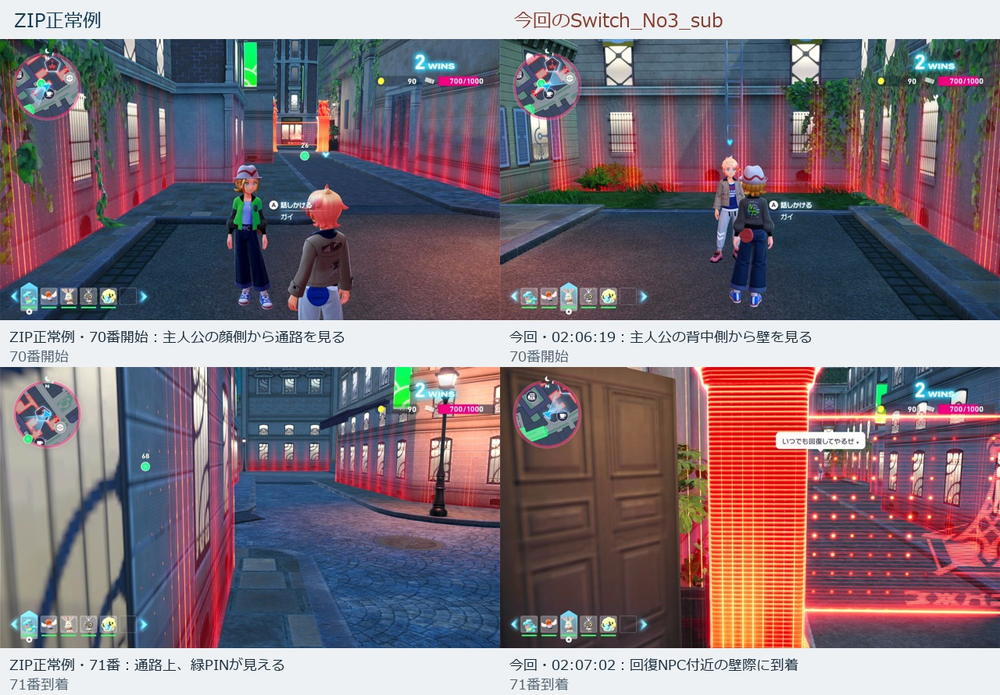
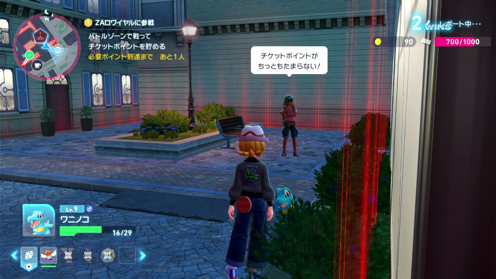
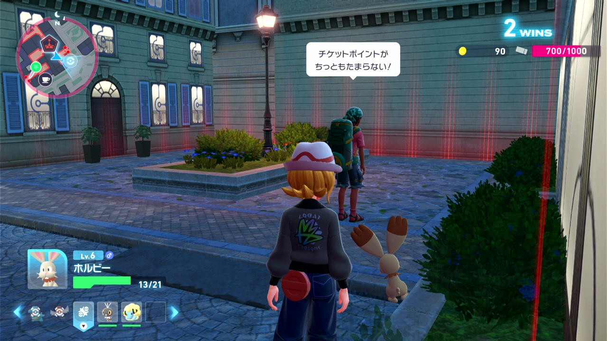
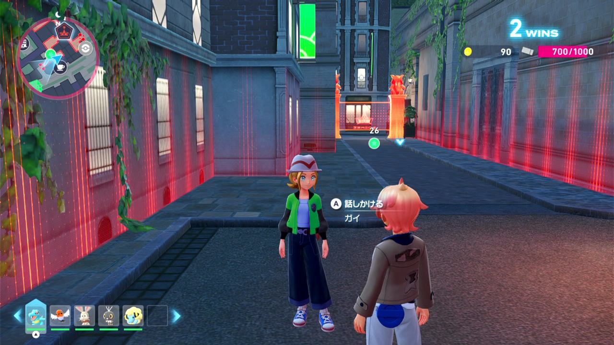
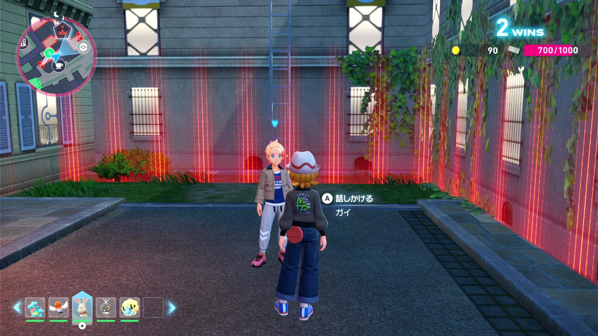
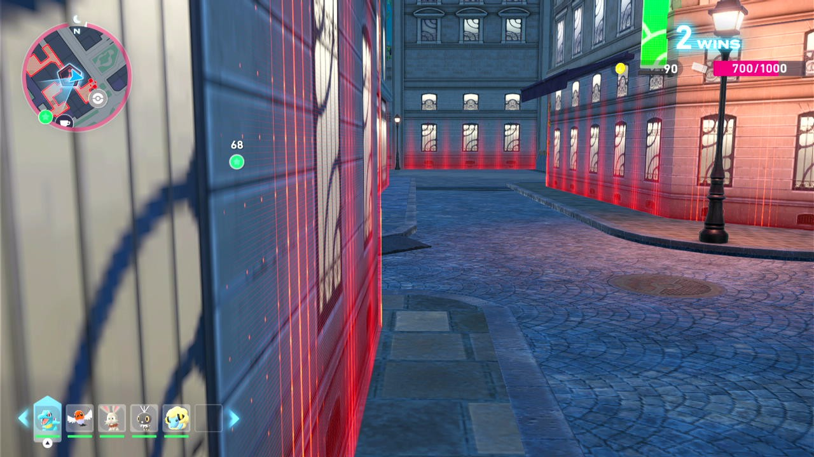
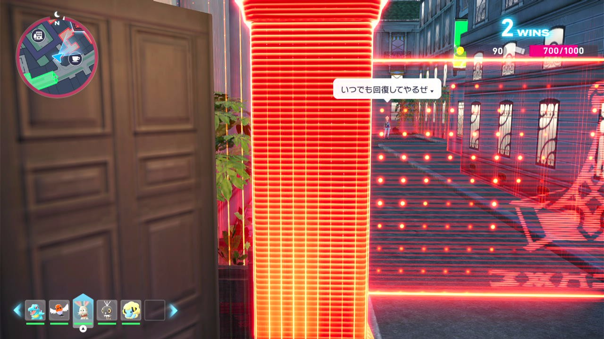
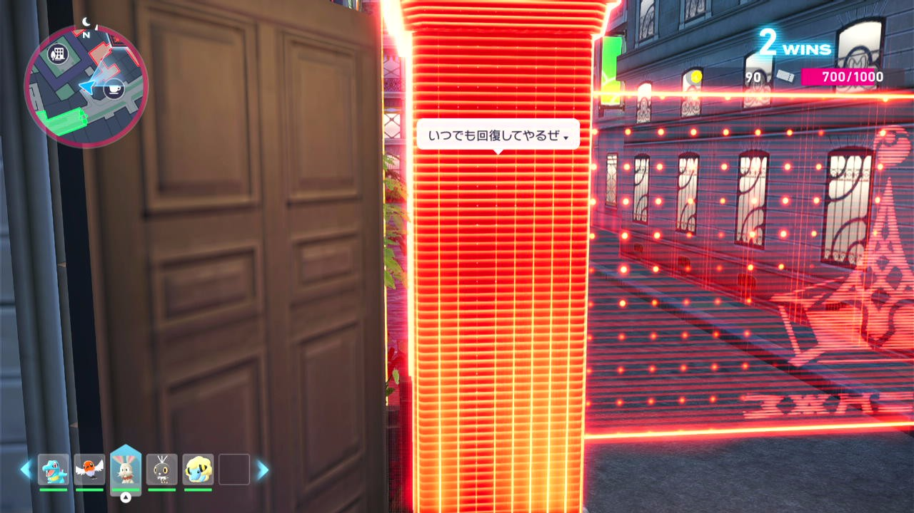

2026-10-26 / 対象セッション 20261026_003707_489722
71番はPINマーカーの方向合わせ。今回の直接原因は、68番の追加L入力後にカメラの向きが反転し、その向きのまま70番の固定移動を行ったこと。2回のゲームリセット後の保存地点は67番と整合する。
後続70番の移動方向を変えていた68番の追加Lを撤去した。A未検知時の共通処理から送るLも、68番に限って無効。Aチェックは残し、未検知中の位置保持と12秒未検知時の67番へのゲームリセット復旧を維持する。70・71番の移動処理は変更していない。
元の視点の保存画像（回復後・70番開始）で、既存Aマーカーは一致度0.980153／閾値0.800で検出。これは68番のA入力直前を直接記録した画像ではなく、実機の通過確認でもない。関連72件は成功。必須全体878件は既知19 failures／8 errors／1 skipが残り、前回から追加診断0。Origin・stock・配布ZIP・clean DevStudio文書・共通断片を同期済み。
反映にはCommands停止後のF5 Reloadが必要。現在の壁際でStepだけを67番へ変えず、ゲームの保存を読み直した地点から 1_STORY_OUT_HOTEL_Z_67 を再開する。今回、実機入力・Stop／Reload・再起動は行っていない。修正と検証の記録
以下は修正前の録画を比較した調査記録。
同じ70番開始地点でも、正常例は主人公の顔側から通路を見ている。今回は主人公の背中側から壁を見ている。70番の移動角度・時間はZIP旧ソースと現ソースでAST一致。異なる画角で同じ操作を行い、71番では回復NPC近くの壁際へ到着した。

| 確認点 | ZIP正常例 | 今回 |
|---|---|---|
| 68番の最後 | LなしでA入力 | 02:06:09.221の実行位置に追加L。動画1:27:26で反転後の画角を確認 |
| 70番開始 | 58:31、通路側 | 1:27:36、壁側 |
| 71番 | 59:14.006から59:17.645まで約3.64秒で72番へ | 02:07:02.762から少なくとも05:38:38.106まで継続。72番への遷移なし |
| 探す対象 | ZA_markerdir("PIN")。A表示確認は72番。71番のPIN未検知には、この経路で期限付きの復帰先がない | |
ZIPの67番保存画像には「レポート中…」があり、2勝・700/1000ポイントの戦闘後の広場が写っている。今回の2回の再開も同じ広場・NPC・花壇・ベンチの位置であり、67番からPINへ方向合わせをやり直す復帰先は整合している。
| 時刻 | 復帰理由 | 戻った地点 |
|---|---|---|
| 01:58:01台 → 01:58:46 | 68番の初回ResetDebug。20秒待機後の確認用リセット | 67番。2勝・700/1000の戦闘後保存地点 |
| 02:03:16台 → 02:04:00 | 69番が進行しないためのcheckpoint復旧。既定120秒の停滞判定 | 同じ67番。敗戦復帰の呼出しではない |
現在の壁際でStep番号だけ67へ変更することと、保存を読み直して67から再開することは別。今回確認した正しい再開地点は後者。
復帰先67を変更する根拠はない。修正対象は68番のLによる画角変更と、70番の移動開始時に必要な画角との整合。A確認自体の撤去や、移動角度の推測変更はこの調査では行っていない。71番の未検知が無期限になる点も確認した。
ゲーム制御コードの変更、実機入力、Stop／Reload／再起動は未実施。修正後の完走確認ではない。保存画像と参照動画の該当場面を確認し、全フレームの視聴ではない。実行位置のサンプル数をボタン入力回数として数えていない。調査対象は今回の67～72番と直前の2回の復帰で、全ストーリーの再開位置監査ではない。






